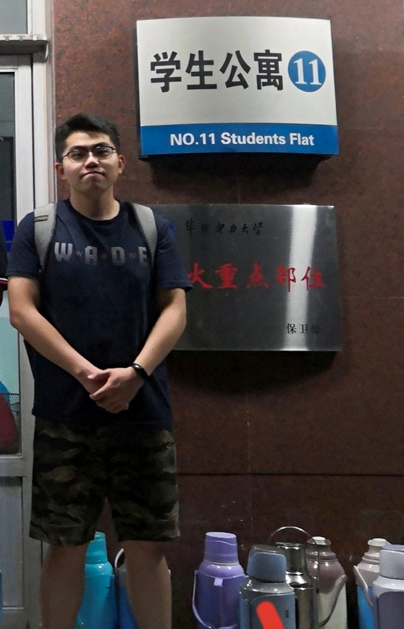

|
 |
Haoyun Liang (梁皓云) Email: haoyun.liang@hotmail.com |
|
Research Interests machine learning, deep learning, computer vision |
|
Education 2018-2021: Shenzhen Institutes of Advanced Technology, Chinese Academy of Sciences, Master's degree in Electrical and communications engineering 2013-2017: North China Electric Power University, Bachelor's degree in Electronic information science and technology |
|
Publications H Liang, et al. Laplacian pyramid-based complex neural network learning for fast MR imaging[J]. Proceedings of Machine Learning Research, 2020, 1: 11. H Liang, et al. Weakly Supervised Deep Prior Learning for Multi-coil MRI Reconstruction. in 28th Annual Meeting of ISMRM, 2020: 4273. |